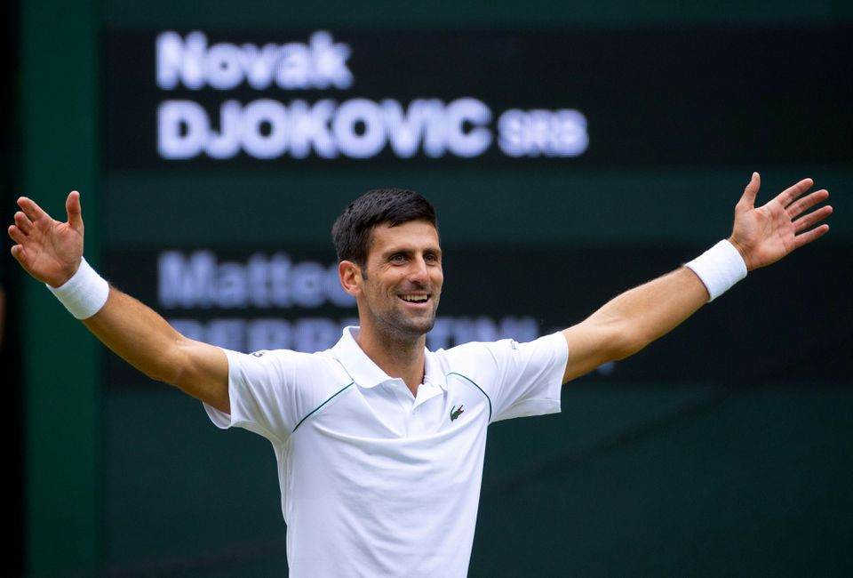

<html>

<head>
    <title> Novak Djokovic</title> 
</html>


<body>
    <h1>Novak Djokovic- Portfolio</h1>

    <table width="100" border="2">
        <tr>
            <td><a href="file:///C:/Users/Zlatko/Desktop/resenje%20zadatka/Sajt%20Novaka%20Djokovica-1.html">Biografija</a></td>
            <td><a href="file:///C:/Users/Zlatko/Desktop/resenje%20zadatka/Sajt%20Novaka%20Djokovica-2.html">Rezultati</a></td>
            <td><a href= "file:///C:/Users/Zlatko/Desktop/resenje%20zadatka/Sajt%20Novaka%20Djokovica-3.html">Kontakt</a></td>
        </tr>
    </table>

    </p>
    
    </p>
    <p><b>Novak Djokovic</b> je profesionalni srpski teniser i po ostvarenim 
        rezultatima najbolji teniser svih vremena koji dolazi iz Srbije.
	 <br> Profesionalno igra od 2003. Osvojio je
        24 titula na Grand slam turnirima. Stigao je do finala na 42 turnira
        <i>Masters</i> serije, od kojih je 29 osvojio (od toga <br> 6 u 2015. godini,
        sto je rekord za jednu sezonu), a ima i 5 titula na <i>Masters Cupu</i>
        (od cega 4 uzastopno, po cemu je jedini u istoriji). Trenutno je prvi 
        na <br> ATP-listi.
    </p>

    </p>
    <p>
        Osim toga, osvojio je bronzanu medalju na OI 2008. u Pekingu. Sa saigracima
        iz reprezentacije Srbije osvojio je <i>Devis Cup</i> 2010.
    </p>
    </p>
    <p>
        Magazin <i>Time</i> uvrstio ga je na svoju listu "100 najuticajnijih
        ljudi na svetu".
    </p>

</body>

</html>

